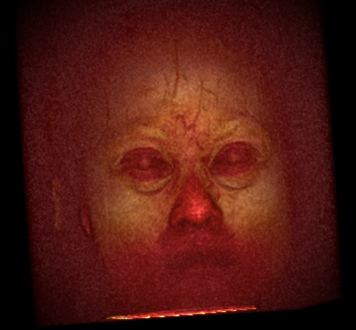
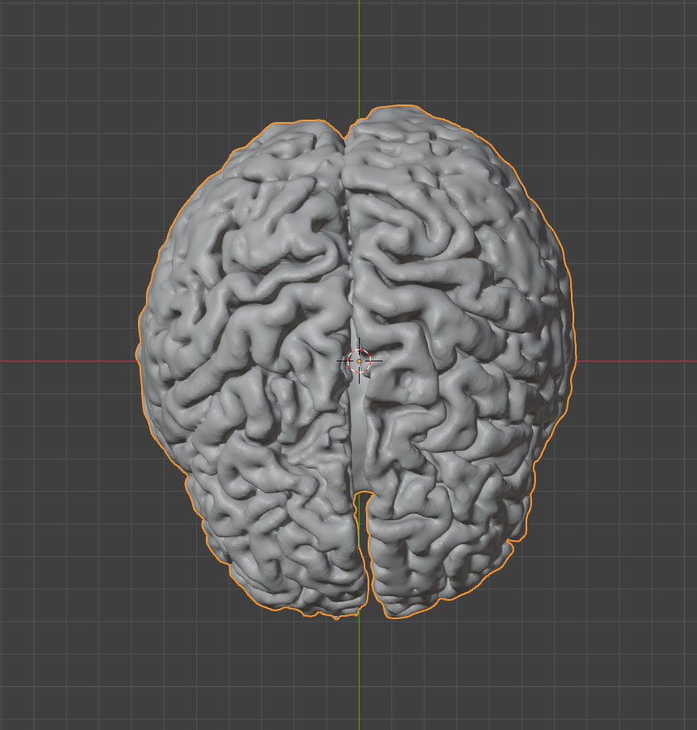
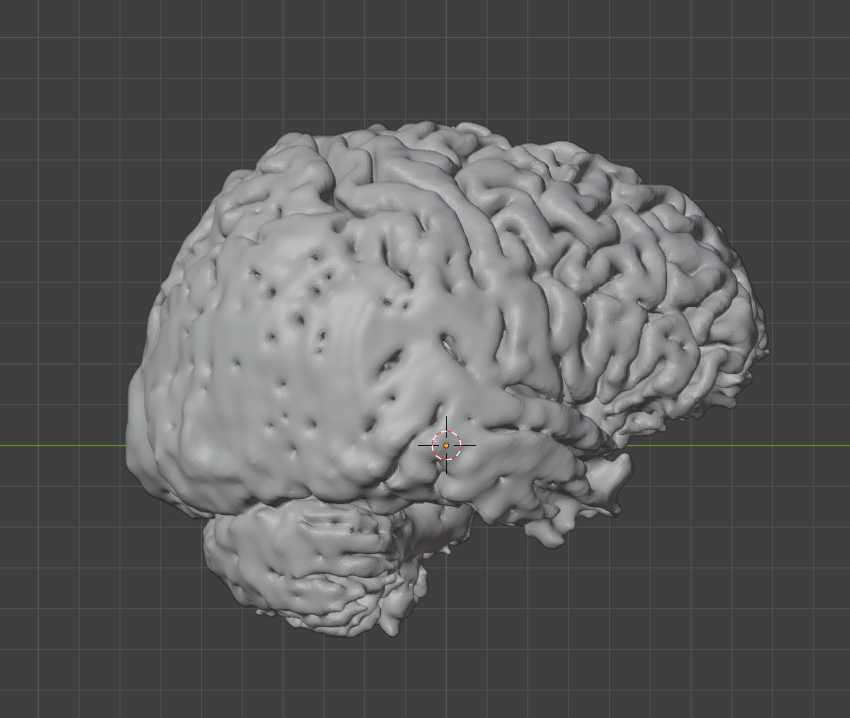

How to make your brain into earrings
DISCLAIMER: Please do not use this procedure for medical diagnosis /srs
In spring 2023, I signed up for one of Ev Fedorenko's fMRI studies to receive a $75 Amazon gift card. However, upon hearing from my wonderful friend Sneve (who is a PhD student at Harvard neuro), I hatched another plan >:)
The fMRI itself was actually quite difficult to complete. I had to keep my head completely still for 2 hours while sporadically solving word puzzles, and I was fighting the urge to doze off the entire time. I'm not sure if my sleepiness was detectable in the fMRI, but the researchers administering the test assured me that my results would still be useful. In the end, I got a DropBox folder of my fMRI scan images, which made it all worth it. It was time to get to work.

Thankfully, the Internet is teeming with resources from people who had 3D printed their brains before. I followed this tutorial to get an STL file of my brain from the DICOM fMRI images. I used 3DSlicer with the SwissSkullStripper(?? what a name) extension to segment out my brain from my skull, then stack the brain segments together into a 3D file. You can also print various parts of your head by segmenting out the appropriate organ, e.g. your skull, but that could be a project for another day.
If you want to see what my entire head looks like in 3DSlicer, click the spoiler below at your own risk (CW: what appears to be the flesh of a freshly-minted zombie).
I then used Blender to clean up the 3D model--removing small disconnected components, Laplacian smoothing, etc. I also used a Bezier curve to split my brain into hemispheres; my longitudinal fissure isn't a straight line, and my left hemisphere is slightly larger than my right. The fissure is also rotated a bit relative to the centerline of my body. According to Wikipedia, this is typical: "The human brain has an overall leftward posterior and rightward anterior asymmetry (or brain torque)."
Through this process, I also learned that the back of my brain is really friggin smooth. It's probably a segmentation issue, but it's funnier to imagine that my visual cortex has simply not caught up with the rest of human evolution. I'm happy to report that my prefrontal cortex is sufficiently wrinkled, though.
Next, I made a PLA test print on an Ultimaker 3. Unfortunately, I was literally too big-brained for the buildplate, so I had to print just the left side of my brain at 80% of its true size. I honestly didn't like the result with the Ultimaker; there were way too many supports that I had to painstakingly remove, and the bottom of the print flaked off easily. SLA would yield better results on those fronts, but it would cost a lot more... unless I made the model really small. Like the size of an earring...
For a while, I kind of lost interest in making the print better-looking, and my 3D-printed left hemisphere sat on my desk for a year. However, right before graduating, I experienced a renewed sense of vigor: I was going to make these damn earrings before I left MIT and lost my makerspace privileges. Thus, I set off to The Deep (one of MIT's makerspaces) to use their Formlabs SLA printers. With help from the wonderful mentor Seth, I was able to produce a pair of tiny brainlets made out of medical resin, printed with a 25-micron layer height. I also printed impossible hearts from our SIGGRAPH paper Meschers!
Next, I spray-painted the prints with a bright, somewhat flesh-colored pink. To do this, I hung them from a cardboard box using some string and tacks, then gradually applied about 3 coats of paint before finishing off with a glossy finish. While they were drying, I made some earring hooks out of paper clips.
Here's what they look like as jewelry :) I gave the brain earrings to Sneve and the heart earrings to my amazing UROP mentor Ana Dodik.